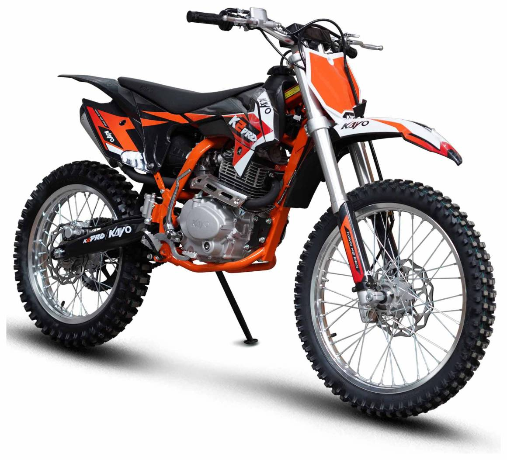

Головна сторінка

KAYO K2 250 — це ендуро-мотоцикл, який підходить для їзди по місту, ґрунтових дорогах та бездоріжжю.
На сайті можна переглянути інформацію про мотоцикл, його характеристики та основні переваги.
Ендуро-мотоцикл для міста та бездоріжжя

KAYO K2 250 — це ендуро-мотоцикл, який підходить для їзди по місту, ґрунтових дорогах та бездоріжжю.
На сайті можна переглянути інформацію про мотоцикл, його характеристики та основні переваги.